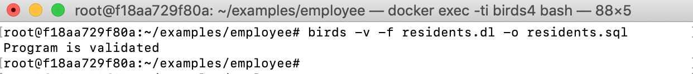
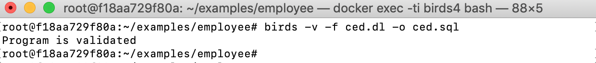
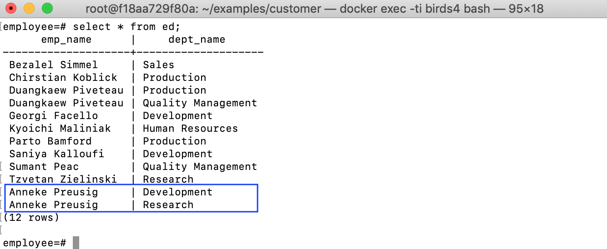
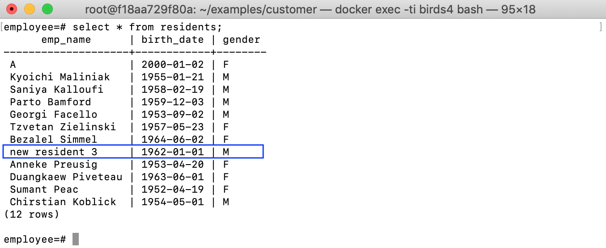
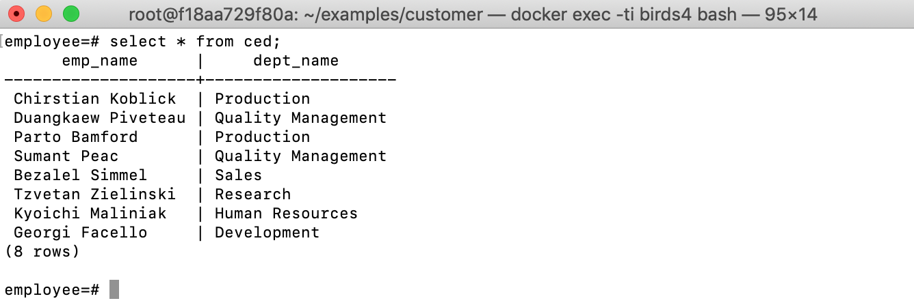

Example: employees database schema
Schema
The employees database (schema.sql) contain five base tables male(emp_name, birth_date), female(emp_name, birth_date), others(emp_name, birth_date, gender), ed(emp_name, dept_name) and eed(emp_name, dept_name).
Table male contains information about male people
| emp_name | birth_date |
|---|---|
| Chirstian Koblick | 1954-05-01 |
| Georgi Facello | 1953-09-02 |
| Kyoichi Maliniak | 1955-01-21 |
| Parto Bamford | 1959-12-03 |
| Saniya Kalloufi | 1958-02-19 |
Table female contains information about female people
| emp_name | birth_date |
|---|---|
| Anneke Preusig | 1953-04-20 |
| Bezalel Simmel | 1964-06-02 |
| Duangkaew Piveteau | 1963-06-01 |
| Sumant Peac | 1952-04-19 |
| Tzvetan Zielinski | 1957-05-23 |
Table others contains information of people having other genders
| emp_name | birth_date | gender |
|---|---|---|
Table ed has all historical departments of each person
| emp_name | dept_name |
|---|---|
| Anneke Preusig | Development |
| Bezalel Simmel | Sales |
| Chirstian Koblick | Production |
| Duangkaew Piveteau | Production |
| Duangkaew Piveteau | Quality Management |
| Georgi Facello | Development |
| Kyoichi Maliniak | Human Resources |
| Parto Bamford | Production |
| Saniya Kalloufi | Development |
| Sumant Peac | Quality Management |
| Tzvetan Zielinski | Research |
Table eed contains only former departments of each person
| emp_name | dept_name |
|---|---|
| Duangkaew Piveteau | Production |
| Saniya Kalloufi | Development |
Several views are expected to be created including residents(emp_name, birth_date, gender), ced(emp_name, dept_name),
residents1962(emp_name, birth_date, gender), employees(emp_name, birth_date, gender), researchers(emp_name) and retired(emp_name).
Update strategy for residents
The view residents contains all personal information:
| emp_name | birth_date | gender |
|---|---|---|
| Kyoichi Maliniak | 1955-01-21 | M |
| Saniya Kalloufi | 1958-02-19 | M |
| Parto Bamford | 1959-12-03 | M |
| Georgi Facello | 1953-09-02 | M |
| Tzvetan Zielinski | 1957-05-23 | F |
| Bezalel Simmel | 1964-06-02 | F |
| Anneke Preusig | 1953-04-20 | F |
| Duangkaew Piveteau | 1963-06-01 | F |
| Sumant Peac | 1952-04-19 | F |
| Chirstian Koblick | 1954-05-01 | M |
For the view residents, we use the attribute GENDER to choose relevant base tables for propagating updated tuples in residents. More concretely, if there is
a person in residents but not in any of the source tables male,
female and other, we insert this person into the table corresponding
to his/her GENDER. In contrast, we delete from the source tables the
people, who do not appear in the view anymore. The Datalog putback
program for residents is the following (residents.dl):
source male('EMP_NAME':string, 'BIRTH_DATE':string).
source female('EMP_NAME':string, 'BIRTH_DATE':string).
source others('EMP_NAME':string, 'BIRTH_DATE':string, 'GENDER':string).
view residents('EMP_NAME':string,'BIRTH_DATE':string,'GENDER':string).
+male(E, B) :- residents(E, B, G), G = 'M', not male(E, B), not others(E, B, G).
-male(E, B) :- male(E, B), G = 'M', not residents(E, B, G).
+female(E, B) :- residents(E, B, G), G = 'F', not female(E, B), not others(E, B, G).
-female(E, B) :- female(E, B), G = 'F', not residents(E, B, G).
+others(E, B, G) :- residents(E, B, G), not G = 'M', not G = 'F', not others(E, B, G).
-others(E, B, G) :- others(E, B, G), not residents(E, B, G).
Verifying and compiling the update strategy into SQL:

Let’s try an insertion to the view residents:
insert into residents values ('A', '2000-01-02', 'F');
The insertion will be propagated to the table female:

Update strategy for ced
The view ced contains information about the current departments of
each employee.
| emp_name | dept_name |
|---|---|
| Chirstian Koblick | Production |
| Duangkaew Piveteau | Quality Management |
| Parto Bamford | Production |
| Sumant Peac | Quality Management |
| Bezalel Simmel | Sales |
| Tzvetan Zielinski | Research |
| Kyoichi Maliniak | Human Resources |
| Anneke Preusig | Development |
| Georgi Facello | Development |
We express the following update strategy for propagating
updated data in this view to the base tables ed and eed. If a person
is in a department according to ed but he/she is currently not in this
department anymore according to ced, this department becomes his/her
previous department, thus need to be added to eed. If a person used to
be in a department according to eed, but he/she come back to this
department according to ced, then this department of him/her need to be removed
from eed. The update strategy program is as follows (ced.dl):
source ed('EMP_NAME':string,'DEPT_NAME':string).
source eed('EMP_NAME':string,'DEPT_NAME':string).
view ced('EMP_NAME':string, 'DEPT_NAME':string).
+ed(E, D) :- ced(E, D), NOT ed(E, D).
-eed(E, D) :- ced(E, D), eed(E, D).
+eed(E, D) :- ed(E, D), NOT ced(E, D), NOT eed(E, D).
Verifying and compiling the update strategy into SQL:

Let’s try an update to ced:
update ced set dept_name = 'Research' where emp_name='Anneke Preusig';
Meaning that Anneke Preusig change her department to Research. This movement is reflected to the source tables:


Update strategy for residents1962
The view residents1962 contains all residents having a birth date in 1962.
| emp_name | birth_date | gender |
|---|---|---|
We define constraints to ensure that in the updated view residents1962
there is no tuple having a value of the attribute BIRTH_DATE not in
1962. Any view updates violating these constraints are rejected.
Interestingly, by having the updatable view residents, we now can use residents as the source table of the view residents1962 and write an update strategy more easily.
By this way, our update strategy is to insert into the source table residents
any new tuples appearing in residents1962 but not yet in residents.
On the other hand, we delete only tuples in residents having
BIRTH_DATE in 1962, if they do not appear in residents1962 anymore.
The strategy is as follows (residents1962.dl):
source residents('EMP_NAME':string,'BIRTH_DATE':string,'GENDER':string).
view residents1962('EMP_NAME':string,'BIRTH_DATE':string,'GENDER':string).
_|_ :- residents1962(E,B,G), B > '1962-12-31'.
_|_ :- residents1962(E,B,G), B < '1962-01-01'.
+residents(E,B,G) :- residents1962(E,B,G), ¬ residents(E,B,G).
-residents(E,B,G) :- residents(E,B,G), B >= '1962-01-01', B <= '1962-12-31', ¬ residents1962(E,B,G).
Verifying and compiling the update strategy into SQL:

Let’s try an update to residents1962:
INSERT INTO public.residents1962 (emp_name, birth_date, gender) VALUES('new resident 3', '1962-01-01', 'M');

The generated SQL also has a fragment of code that checks whether the defined constraints on the view are satisfied when having view updates. Let’s try to insert a resident not born in 1962 to the view:

The insertion is rejected with error message ‘Invalid view update: constraints on the view are violated’
Update strategy for employees
The view employees contains residents, who are underemployment
| emp_name | birth_date | gender |
|---|---|---|
| Anneke Preusig | 1953-04-20 | F |
| Bezalel Simmel | 1964-06-02 | F |
| Chirstian Koblick | 1954-05-01 | M |
| Duangkaew Piveteau | 1963-06-01 | F |
| Georgi Facello | 1953-09-02 | M |
| Kyoichi Maliniak | 1955-01-21 | M |
| Parto Bamford | 1959-12-03 | M |
| Sumant Peac | 1952-04-19 | F |
| Tzvetan Zielinski | 1957-05-23 | F |
For these views, we use the two views residents and ced defined before as the
source relations. This is possible because both residents and ced
are all updatable, thus they can be treated as base tables.
More interestingly, by using constraints, we can specify more
complicated restrictions of updates on these views. As an example, we
define a constraint on the view residents by the following Datalog
rule: ⊥ :- employees(E,B,G), ¬ ced(E,_). That means there is no
tuple ⟨E,B,G⟩ in the updated view employees having the value E of
the attribute EMP_NAME, which cannot be found in any tuples of ced.
By the constraint, we do not allow inserting into employees a really
new employee, who is not mentioned in the source relation ced. The following is the update strategy for employees (employees.dl):
source residents('EMP_NAME':string, 'BIRTH_DATE':string, 'GENDER':string).
source ced('EMP_NAME':string, 'DEPT_NAME':string).
view employees('EMP_NAME':string, 'BIRTH_DATE':string, 'GENDER':string).
% constraint
_|_ :- employees(E,B,G), ¬ced(E,_).
% update strategy
+residents(E,B,G) :- employees(E,B,G), ¬residents(E,B,G).
-residents(E,B,G) :- residents(E,B,G), ced(E,_), ¬employees(E,B,G).
Verifying and compiling the update strategy into SQL:

Let’s try updating the birth date of an employee:
UPDATE employees SET birth_date='1953-04-21' WHERE emp_name='Anneke Preusig'
The source tables will be updated:

Update strategy for researchers
The view researchers shows only employees, who are doing research.
| emp_name |
|---|
| Tzvetan Zielinski |
For this view, an update strategy is as the following researchers.dl:
source residents('EMP_NAME':string, 'BIRTH_DATE':string, 'GENDER':string).
source ced('EMP_NAME':string, 'DEPT_NAME':string).
view researchers('EMP_NAME':string).
-ced(E,D) :- residents(E,B,G), ced(E,D), D = 'Research', ¬researchers(E).
+residents(E,B,G) :- researchers(E), ¬residents(E,_,_), B='0001-01-01', G='unknown'.
+ced(E,D) :- researchers(E), D = 'Research'.
The first two rules means if a resident is a researcher but not in the view researchers anymore, we deleted the current department Research of this resident.
By contrast, by the third rule, if a new researcher appears in the view, we need to put this department information to the table ced, which contains information about the current departments.
The second rule ensures each researcher is a resident by inserting into residents if a researcher is not yet a resident.
Verifying and compiling the update strategy into SQL:

Let’s try to remove a researcher:
DELETE FROM researchers WHERE emp_name='Anneke Preusig';
And Anneke Preusig will no longer belong to the department Research

Update strategy for retired
The view retired contains residents, who were retired.
| emp_name |
|---|
| Saniya Kalloufi |
The update strategy for retired is to remove from the ced the current departments of people, who are retired (in the view retired), and to insert a new department for each resident, who is not retired but is not yet mentioned in ced. We also ensure a retired person is a resident as follows (retired.dl):
source residents('EMP_NAME':string, 'BIRTH_DATE':string, 'GENDER':string).
source ced('EMP_NAME':string, 'DEPT_NAME':string).
view retired('EMP_NAME':string).
-ced(E,D) :- ced(E,D), retired(E).
+residents(E,B,G) :- retired(E), ¬ residents(E,_,_), B='0001-01-01', G='unknown'.
+ced(E,D) :- residents(E,_,_), ¬retired(E), ¬ced(E,_) , D='unknown'.
Verifying and compiling the update strategy into SQL:

For example, if Parto Bamford is now retired:
insert into retired values('Parto Bamford');
He will not be in any department anymore:

Update strategy for voter
Let blacklist(EMP_NAME) be a black list of residents
| emp_name |
|---|
| Kyoichi Maliniak |
We now define an update strategy for a view voter(emp_name, birth_date) containing residents, who have the right to vote at elections, as follows (voter.dl):
source blacklist('EMP_NAME':string).
source residents('EMP_NAME':string, 'BIRTH_DATE':string, 'GENDER':string).
view voter('EMP_NAME':string, 'BIRTH_DATE':string).
⊥ :- voter(NAME,BIRTH_DATE), blacklist(NAME).
+residents(E,B,G) :- voter(E,B), G='unknown', ¬ residents(E,B,_).
-residents(E,B,G) :- residents(E,B,G), not blacklist(E), ¬ voter(E,B).
The constraint ⊥ :- voter(NAME,BIRTH_DATE), blacklist(NAME). ensures that no person in the black list can be inserted to the view voter. Updated data in the view voter is reflected to the source relation residents by the last two rules.
Verifying and compiling the update strategy into SQL:

If there is an attempt to insert Kyoichi Maliniak into voter:
INSERT INTO voter values('Kyoichi Maliniak', '1955-01-21');
The attempt will be rejected: